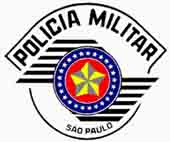

Inicia amanhã, dia 21 de março de 2011, o período para inscrição no concurso da Polícia Militar de São Paulo, a PMSP. Serão oferecidas 500 vagas para quem quer se tornar Soldado PM de 2ª casse, no estado com o maior PIB do Brasil.
A taxa de inscrição é no valor de R$ 50,00, e os candidatos têm até o dia 20 de abril de 2011 para se cadastrar. Para se inscrever, ter acesso ao edital do concurso e obter maiores informações, os interessados devem visitar o site https://www.vunesp.com.br e acessar a área "Concursos em andamento".

Vale a dica de estudar com base no conteúdo das provas do concurso anterior, além de não esquecer da preparação física, etapa de teste eliminatória no concurso. E boa sorte!